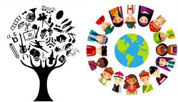

Innovación tecnológica
Cultura digital
Startups
Colombia continúa avanzando en el sector tecnológico con el crecimiento de empresas de software, startups y proyectos enfocados en inteligencia artificial. En ciudades como Bogotá, Medellín y Barranquilla, se están impulsando iniciativas que buscan posicionar al país como un referente digital en América Latina.
Además, el gobierno y diferentes organizaciones están invirtiendo en educación tecnológica, promoviendo el aprendizaje en programación, análisis de datos y transformación digital. Esto ha permitido que más jóvenes accedan a oportunidades laborales en el sector tecnológico.

La cultura colombiana sigue expandiéndose a nivel global gracias al talento de artistas, músicos y creadores que están dejando huella en diferentes países. Festivales, exposiciones y eventos culturales han permitido mostrar la diversidad y riqueza cultural del país
Ciudades como Cali, Barranquilla y Medellín han sido protagonistas en el desarrollo de espacios culturales, donde el arte, la danza y la música juegan un papel fundamental en la identidad nacional. Este crecimiento también impulsa el turismo cultural.
El comercio electrónico en Colombia ha experimentado un crecimiento significativo en los últimos años, impulsado por el aumento del uso de internet y dispositivos móviles. Cada vez más empresas están adaptando sus modelos de negocio al entorno digital.
Este crecimiento ha permitido la creación de nuevos empleos y oportunidades para emprendedores, quienes encuentran en las plataformas digitales una forma efectiva de llegar a más clientes. Se espera que la economía digital continúe expandiéndose en los próximos años.
Nuevas apps en Barranquilla
Medellín innovadora
Bogotá digital